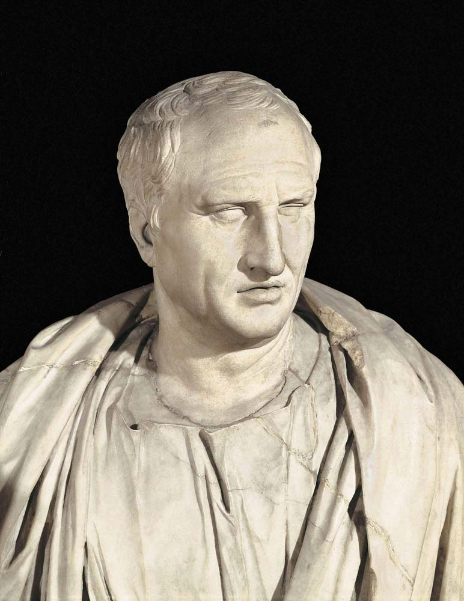
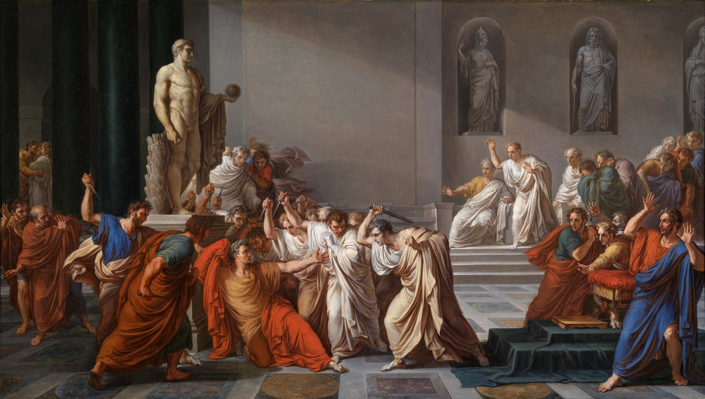
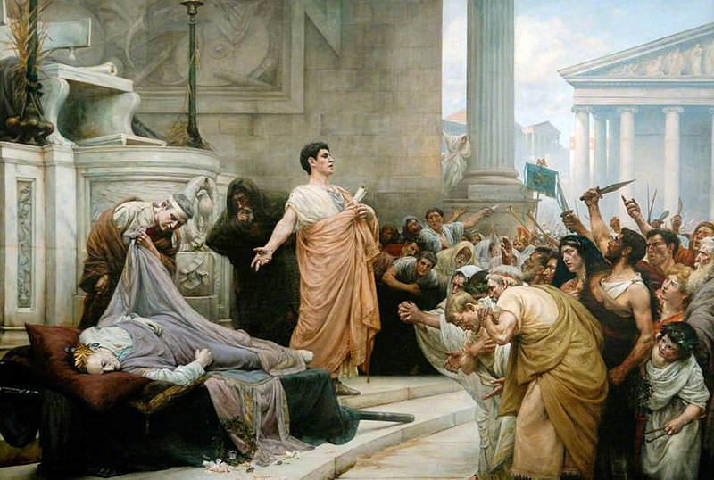
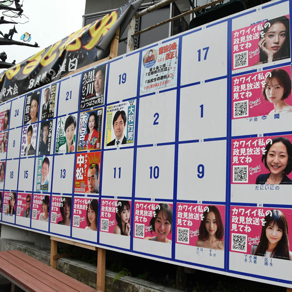
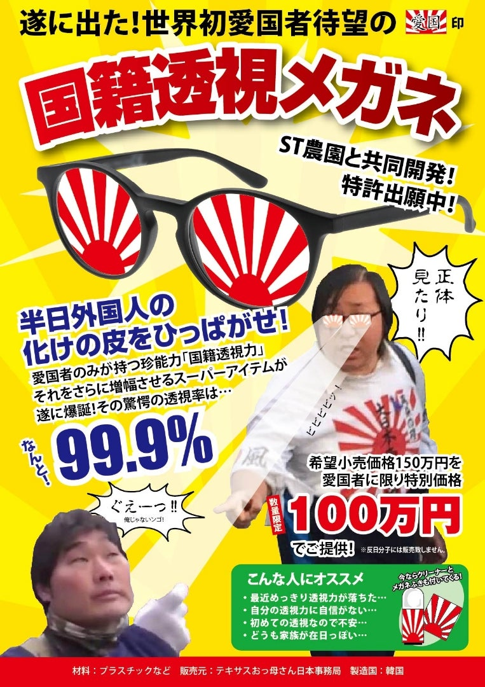
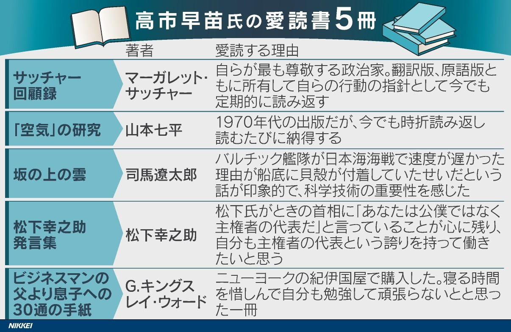
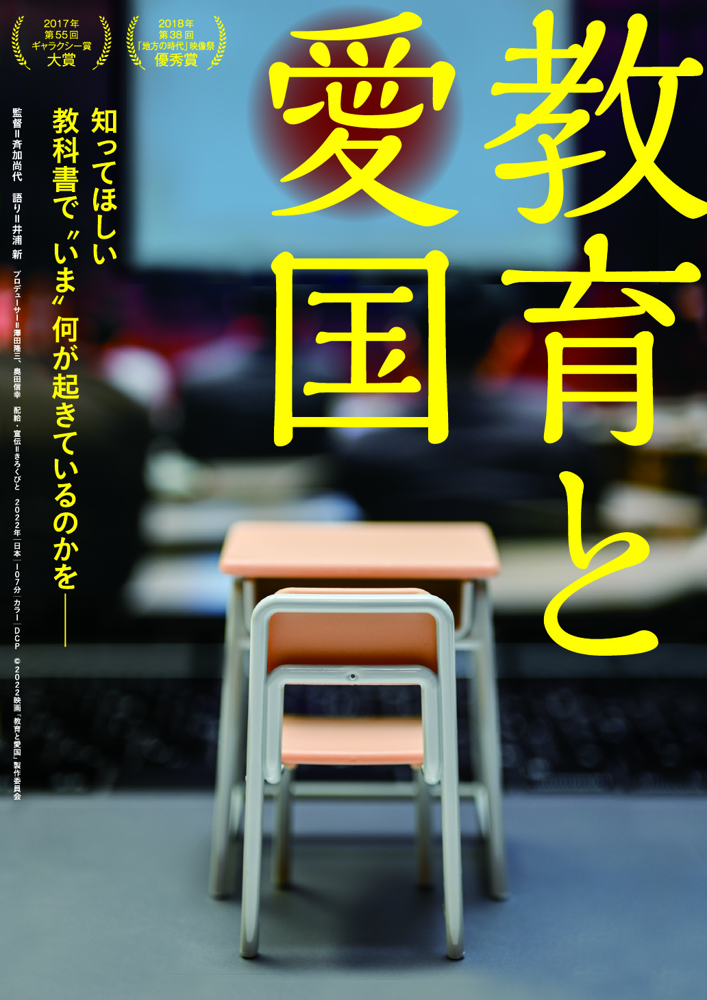

![]()
{kind=link}
{kind=link}
| 項目 | 比率 | 到達目標 |
|---|---|---|
| リーディング・アサインメント | 30 | 4 |
| 授業の感想 | 30 | 1;2 |
| レポート（2種） | 30 | 1; 2; 3; 4; 5 |
| ディスカッション（受講態度を含む） | 10 | 1; 2 |
政治学概論Ⅰ《2025》
#1 イントロダクション
KEYWORDS
- 成績評価；中等教育と高等教育
Ⅰ. 自己紹介
自己紹介
- 氏名：苅谷千尋（かりやちひろ）
- 所属：金沢大学 教育支援センター
- 主担当業務：高大接続コア・センター業務
- 専門：政治学 > 政治思想史（イギリス）
- 18世紀イギリスの議会政治の発展に、古典古代の著作（キケロ；サルスティウス；タキトゥス）の読解が果たした役割（レトリックの受容史）cf. 市民革命史観
- Webサイト
自己紹介 > レトリックの受容史
主要研究対象
- エドマンド・バーク
- 保守主義の原理原則を論じた思想家とみなされる
確かに社会は、一種の契約である。……〔時々の利益を目的とするような契約であれば、好き勝手に契約解消も可能〕。しかし、国家stateを、胡椒やコーヒー……などの交易する際の協力協定partnershipとなんら変わらぬ存在とみなすべきではない。……国家は、今、生きている者、既に死した者、そしてこれから生まれてくる者のあいだの協定である。
自己紹介 > レトリックの受容史
キケロ
私の考えでは、弁論の伴わない物言わぬ知恵だけでは、人々の習慣を突然に変え、多様な生き方へと順応させることは出来なかったことだろう。さて、こうして都市が建設され、人々が約束を守ることと公正を尊ぶことを憶えたり、自ら進んで他人に従い、公共の利益の為に労苦を厭わぬばかりか、生命を投げ出すことさえ出来る状態になるためには、理性が見いだしたことを人々に説得する弁論の力が必要不可欠だったはずである。実際、重々しくかつ心地よい弁論に促されて初めて、人は力で優っていても力を用いずに法に従うようになり、周りの者から傑出していても彼らと対等に扱われることに我慢するようになり、既に第二の天性ともなっている永く続いた快適な習慣からも自ら進んで脱するようになる。弁論は当初このようにして誕生し、大いに成長を遂げて、やがては戦争と平和というこの上ない大事にも関わり、人々に多大な利益をもたらすようになったと思われる。

自己紹介 > レトリックの受容史
プルタルコス
民衆が演説をどう受け止めるかに関心を持たない者は、すなわち寡頭制を支持する者、説得よりも暴力に頼ろうとする者である。

自己紹介 > レトリックの受容史
タキトゥス
今昔を比較して暇を潰す老人らは、つぎのことに気がついた。国家を統治した歴代の元首のうちで、他人の雄弁術を必要としたのは、ネロが最初であると。
- タキトゥスの読まれ方
- 黒いタキトゥス：政治における理念、理想を否定し、権謀術数こそ政治の核心であることを説く
- 赤いタキトゥス：言論の自由が保証された共和政ローマこそ理想の政治であり、政治は理念をめぐる言論闘争である

自己紹介 > レトリックの受容史
シェイクスピア『ジュリアス・シーザー』（1599）
- 接ぎ木されるレトリックの伝統
- 人文学のルネサンス
- レトリックの効能と危険性
- カエサルに対する葬送演説
- ブルータス：カエサル（シーザーはカエサルの英語読み）は暴君になろうとしていたと暗殺を正当化（カエサルが死んで我々が自由になるか、カエサルが生きて我々が奴隷になるか）
- アントニー：ブルータスを称えつつ、カエサルの功績を淡々と語る
- 聴衆を味方につけ、ブルータスに復讐心を抱かせる
- 民衆は暴徒化し、ブルータス、ローマから逃走（自害）
自己紹介 > レトリックの受容史

- SOUCE: Vincenzo Camuccini, The Death of Julius Caesar, 1806 (via Wikipedia)
自己紹介 > レトリックの受容史

- SOUCE: George Edward Robertson, Marc Antony’s Oration at Caesar’s Funeral, 1864 (via Wikipedia)
自己紹介 > レトリックの受容史
聴衆
市民4：ここではブルータスの悪口は言わないのが一番だ。
市民1：このシーザーってやつは暴君だった。
市民3：うん、間違いない。ローマからいなくなってよかった。
市民2：黙ってアントニーの話を聞こうや。
アントニー：心優しいローマ市民諸君──
-
市民一同：静かにしろ、おい、聞こうぜ。
- シェイクスピア (2014, p. 116), 第3幕 第2場
自己紹介 > レトリックの受容史
アントニー
友よ、ローマ人よ、同胞諸君、耳を貸してくれ！私が来たのはシーザーを葬るためだ、褒め称えるためではない。悪事は犯した人間の死後も生き残り、善行は往々にして骨とともに埋葬される。シーザーにもそうなってもらおう。高潔なブルータスはシーザーが野心を抱いたと言う。もしそうなら嘆かわしい罪だ、そして嘆かわしくもシーザーはその報いを受けた。
私は三度王冠をシーザーに捧げ、シーザーは三度それを拒否した。これが野心か？ だがブルータスは彼が野心を抱いたと言う、そして紛れもなくブルータスは公明正大な人物だ。私はブルータスの言うことを否定するつもりはない、ただ知っていることを言うためにここにいるだけだ。諸君はかつてシーザーを愛した、愛するだけの理由があった、ならば今どんな理由があって彼を悼もうとしない？
- シェイクスピア (2014, pp. 116–117), 第3幕 第2場
自己紹介 > レトリックの受容史
聴衆
市民1：アントニーの言うことにも一理あるな。
市民2：筋道たてて考えれば、ひどい目に遭ったのはシーザーのほうだ。
市民3：だよな、みんな？ 後釜はもっと悪いやつかもしれん。
-
市民4：聞いたか？ シーザーは王冠を受け取ろうとしなかった。だから野心がなかったのは確かだ。
- シェイクスピア (2014, pp. 118–119), 第3幕 第2場
自己紹介 > レトリックの受容史
サミュエル・ジョンソン
最後に演説された貴族議員〔Hurgo院Heryef卿〕はあまりに偉大な雄弁の達人です。その巧みさゆえに、人は、彼の言葉を聞くに当たって、喜びから自然に生まれるあらゆる注意力を向けることがありません。聴き手の心には、部分的な表現や巧みな推論に惑わされるのではないか、という恐れから不安が生じるものです。しかし、彼はこのようなあらゆる不安を生じさせないほどに恐ろしい、理路整然と論じられる人（reasoner）なのです。諸君、私が常に恐れているのは、この貴族議員の想像力が与える装飾（ornaments）のなかで、誤謬が真実であるかのように見えすぎてしまうことなのです。そしてまた、理性の光によって導かれる自分自身を想像しながらも、その詭弁（sophitry）が私の知性（understanding）を惑わすことなのです。諸君、そこで私は、彼の装飾を再検討し、それが真実の力によるものなのか、それとも雄弁によるものなのか、私は試してみようと思う。
自己紹介 > レトリックの受容史
エドマンド・バーク
ある古代の著述家（プルタルコスだと思う）は､「聴衆の心に刺を刺した唯一の雄弁家」と呼ばれるペリクレスの雄弁について､幾つか詩を引用している。ペリクレスと同様に､この声明の雄弁さは､真の人間性（humanity）の感性と矛盾せず､むしろ感性を強化するものであり､私の心には皮膚以上に深く刺さった刺が残っている。この刺は､殺人者が外科であらゆる手を尽くして取り除こうとしても取り除くことはできず､また､この刺が生み出した胸の高鳴りは､強奪や没収という皮膚を和らげる湿布薬をもってしても和らげることはできない。私はこの〔革命フランス〕共和国を愛すことができない。
自己紹介 > 高大接続業務
校務（高大接続）
- 高大接続リーディングセミナー
- 高校生向けに書かれた新書らを読みあう（ セミナーの模様）
- ボードゲームで学ぶ社会の平等と不平等
- フランスで作られた、社会格差を知り、考えるためのモノポリー教材（ セミナーの模様）
- 高大接続ラウンドテーブル
- 探究学習を題材に、高校生と大学生が交流（ラウンドテーブルの模様）
- R言語を用いたデータの可視化（参考1）
Ⅱ. 教材
教材
- ウェブサイト > ホームページ
- レジュメ（resume）
- 保存・印刷方法:キーボードの「E」でpdf出力可（Goggle Chrome推奨）
- スライド（slide）
- 保存・印刷方法：サイドメニュー（右側）のpdfをクリック
- 動画（movie）
Ⅲ. シラバス
シラバス > 授業の目的
ねらい
本授業は、政治学に関する入門的・基礎的知識を学ぶことを目的としています。日々のニュース報道や新聞報道で見聞するように、「政治」は私たちの生活に非常に密着したものです。しかし、政治が具体的にどのような仕組み・メカニズムのもとに成り立っているかは、理解しづらく、私たちを「政治」から遠ざけるひとつの原因となっています。この授業では、政治に関わる基本概念の理解を通して、政治や政策を動かす仕組み・メカニズムについて説明します。
カリキュラム上の位置づけ
この授業は、免許法該当科目（教科に関する科目）の「政治学」に分類されている選択必修科目です。
シラバス > 授業の到達目標
- 受講生が、国民主権を中心とした公民分野の基礎的知識を得て、初学者に対してわかりやすく説明することができる。（公民）
- 受講生が、選挙制度、政党、政治体制といった政治学の基礎的知識を得て、初学者に対してわかりやすく説明することができる。（基礎的関心）
- 受講生が､政治学の諸概念について､自分なりの視点を加味した､関係図を作成することができる（基礎的関心）
- 受講生が、政治学ならびに公民分野に関わる基本的な資料、文献を読みこなすことができる。（論理的思考・文献読解能力）
- 受講生が、1及び2で得た知識を背景に、日々のニュース報道や新聞報道をより深く、また相対的に理解したうえで、自分自身の意見や解釈を、確かな根拠を明示しながら、明快に記述することができる。（論理的思考・記述能力）
シラバス > 授業の進め方
授業の進め方
初回から第4回目までの授業はオンデマンド配信にて実施します（初回・第2回は12月、第3回・第4回は1月を予定）｡それ以降の授業は対面で実施いたします（2026年2月2日（月）から6日（金）を予定）｡
授業はスライド資料を用いておこないます（資料は、このウェブサイトを通して配布します）
授業は、受講生の理解度や関心を確認しながら進められます。そのため、受講生は、各単元に関連する指定文献を事前に読み、それについての感想、疑問などを書くことが求められます（リーディング・アサインメント）。また、授業の感想を簡単に書いてもらいます。回収したこれらの感想、意見のうち、重要なもの、代表的なものを紹介しながら､授業を進めます。すべての回答は一覧表にして配布します。
詳しくは予習・復習に関する指示を参照下さい。
シラバス > 授業キーワード
授業キーワード
- 福祉国家
- 国民主権
- 選挙制度
- 政治制度
- 政治過程
- 政官関係
- 地方自治
シラバス > 成績評価の方法およびその基準
シラバス > 成績評価の方法およびその基準
- 授業には3分の2以上の出席を必要とします
- 評価基準は、授業の到達目標に準じます
- 普通に取り組めば80点以上とれるように、配点しています
- レポートは秀か優を決めるために使っています（使いたいです）
- 以上のことは、レポート評価は厳し目（各レポート8点/15点満点を標準的なレポートとして評価し、それ以上、それ以下で点数をつけます）、その他は甘め目であることを含意します
- すべての授業終了後に実施する授業アンケートも「授業の感想」の一つとして扱い､評価の対象とします
- 出席点はありません
- 出席回数は足切りのためのみに使います
シラバス > 単位についての考え方
NoteNote | 予習復習も単位取得に必要な時間です
- 授業出席時間だけでは、単位取得時間を満たしません
- 学修の観点だけでなく、大学制度上、予習復習は必須です
シラバス > 単位についての考え方
1単位＝45時間の学修の考え方（「大学設置基準」）
我が国の大学教育は単位制度を基本としており、1単位あたり45時間の学修を必要とする内容をもって構成することが標準とされています。ここでいう１単位あたりの学修時間は、授業時間内の学修時間だけではなく、その授業の事前の準備学修・事後の準備復習を合わせたものとなっています（文部科学省高等教育局 (n.d.)）
2単位14週間の授業の場合
- 90時間の学修を要し、うち1/3の30時間が授業時間
- 残りの60時間が授業外での学修時間となる
- 慣例的に概算計算される
科目概要 > 成績評価 > レポート
⑴ 芋づる式マップ
⑵ 試験問題の作成
- 詳しくは別途案内します
科目概要 > 成績評価 > 芋づる式マップ

科目概要 > 成績評価 > 芋づる式マップ

シラバス > テキストなど
テキスト
- 使用しません
参考文献
- 授業中に適宜紹介します
その他授業資料等
- レジュメ、スライド資料などの授業資料は､特設ウェブサイト（https://kariyach.github.io/teaching/Politics1/index.html）を通して配布します。リーディング・アサインメントで用いる著作権のある文献についてはMoodleにアップロードいたします。
シラバス > 予習・復習に関する指示 > 予習
予習
- 予習：リーディング・アサインメント
- ほぼ毎回の授業において､内容にかかわる文献を事前に読み､感想や質問を書いて提出して下さい
- 文献の分量は内容によって差はありますが､1時間くらい時間を書けて欲しいと思っています
- 合計10回実施（1回提出につき3点。不正行為、悪質な内容でなければ、一律に3点つけます）
- 文献、提出先、締め切りについては、特設サイトホームページからご確認下さい
2月7日23:59まで遅延提出を認めますが、得点は1点となります
シラバス > 予習・復習に関する指示 > 復習
復習
- 復習：授業の感想と授業アンケート
- 授業内容に関する感想を提出してください
- オンデマンド授業は毎回､対面授業の場合は､一日に1回とします
- 30分くらい復習の時間を取って欲しいと思います
- 合計9回実施（1回提出につき3点。不正行為、悪質な内容でなければ、一律に3点つけます。全て期日までに提出した者には3点加点します）
- 文献、提出先、締め切りについては、特設サイトホームページからご確認下さい
2月7日23:59まで遅延提出を認めますが、得点は1点となります
シラバス > オフィスアワー等
学生からの質問への対応方法等
- 対面授業の期間中は､授業前後に質問､相談に応じます
- この期間以外に、質問・連絡が必要な場合は、社会科教育講座主任の諸岡先生にご連絡ください
スケジュール
| 回 | 日付 | コマ | 時間 | 開催形態 | タイトル | キーワード |
|---|---|---|---|---|---|---|
| 1 | 12-03 | - | - | オンデマンド | イントロダクション | 成績評価；中等教育と高等教育 |
| 2 | 12-17 | - | - | オンデマンド | 福祉国家と現代日本の課題 | 福祉国家；福祉政策；小熊モデル；エスピン＝アンデルセンモデル |
| 3 | 01-07 | - | - | オンデマンド | 国民主権と天皇制 | 国民主権；社会契約論；象徴天皇；公的行為 |
| 4 | 01-21 | - | - | オンデマンド | 選挙制度と政治意識 | 選挙制度；セイリアンス；政党ラベル；有効性感覚；選択的接触 |
| 5 | 02-02 | 2 | 10:25-12:05 | 対面 | 民主主義と全体主義（１） | リベラル・デモクラシー；支配の類型；友敵論；自由と責任；全体主義 |
| 6 | 02-02 | 3 | 13:00-14:40 | 対面 | 民主主義と全体主義（２） | 『関心領域』；全体主義；無関心；恐怖；「悪の凡庸さ」 |
| 7 | 02-03 | 2 | 10:25-12:05 | 対面 | 政治制度と政治過程（１） | 立法制度；55年体制；ネオ55年体制 |
| 8 | 02-03 | 3 | 13:00-14:40 | 対面 | 政治制度と政治過程（２） | イシュー・セイリアンス；利益団体；フリーライダー；政治過程 |
| 9 | 02-04 | 2 | 10:25-12:05 | 対面 | 前半のまとめ／国会中継 | グループワーク；ディスカッション |
| 10 | 02-04 | 3 | 13:00-14:40 | 対面 | 行政と政官関係（１） | 官僚制；階統制；レッド・テープ；最大動員モデル |
| 11 | 02-05 | 2 | 10:25-12:05 | 対面 | 行政と政官関係（２） | 政官関係；政治主導；官僚の類型；官邸主導 |
| 12 | 02-05 | 3 | 13:00-14:40 | 対面 | 地方自治（１） | 地方分権一括法；「民主主義の学校」；中央地方関係；自治事務；法定受託事務；紛争調整制度 |
| 13 | 02-06 | 2 | 10:25-12:05 | 対面 | 地方自治（２） | 地方政府；三割自治論；平成の大合併 |
| 14 | 02-06 | 3 | 13:00-14:40 | 対面 | 後半のまとめ／ディスカッション | 後半のまとめ／ディスカッション2 |
- オンデマンドについては配信予定日です。若干､前後する可能性があります
- ディスカッション1（2月5日3限）は、国会中継の視聴と議論を予定しています
- ディスカッション2（2月7日3限）は、レポート課題2の発表と議論を予定しています
リーディングアサインメント
| 著者 | タイトル | 〆切 | URL |
|---|---|---|---|
| テレ東BIZ | 春風亭一之輔の1票の流儀(動画コンテンツ) | 2025-12-01 | URL |
| 上野千鶴子ら | 座談会 経産省 次官・若手プロジェクト「不安な個人、立ちすくむ国家」をめぐって | 2025-12-15 | URL |
| 原武史ら | 座談会 これからの象徴天皇制を考える | 2025-01-05 | URL |
| 牧原出 | フォーカス政治 | 高市政権、揺らぐ基盤と政策の針路 | 2025-01-19 | URL |
| 小野寺拓也・田野大輔 | ナチスは「良いこと」もしたのか？*「おわりに」のみ | 2025-01-31 | URL |
| TBSラジオ「セイジドウラク」 | Ep.11「澤田記者が参議院を好きすぎる件」（音声コンテンツ） | 2025-01-31 | URL |
| 朝日新聞 / 読売新聞 | 子犬・子猫、健やかに育つために（2019年9月25日） / 地球を読む 垣添忠生 がん医療の課題（2021年3月14日） / 紙の教科書「重視」相次ぐ 中教審部会 教育関係団体が意見（2025年4月29日） | 2025-02-01 | URL |
| 読売新聞 | ［あすへの考］【現代の労働環境】「無駄な仕事」新自由主義の弊害…社会学者 酒井隆史氏 | 2025-02-02 | URL |
| ゆり・金井利之 | 「地方創生をやめてくれて良かった」！？【東大法学部教授を推薦生が直撃】 | 2025-02-03 | URL |
| 朝日新聞 | 「地方創生のモデル」から転落した町、支援競争で疲弊の先に描く姿は / むらおさめ 集落のみとり、余力あるうちに文化・資源を継承 / 人気の移住先は東京近郊だけ?「選ばれる地域」になるための秘密と鍵 | 2025-02-04 | URL |
リーディング・アサインメント
- Q1. 重要だと思った箇所､あるいは､面白いと思った箇所､疑問に思っていた点が解決した箇所などを挙げて下さい（ページ数を記載すること・行数は不要）
- Q2. 上記の理由を教えて下さい（150-200字程度）
Ⅳ. リーディング・アサインメント
リーディング・アサインメント
政治家の話し方について、（10：00あたり）
本当に自分の言葉で話している人は、話の間を恐れない、下を向かないなどといった内容や、饒舌であるからこそ疑わなければならないというのが、落語家が言うからなのか説得力があったから。私はこれまで、話の間が短ければ短いほど良いスピーチだと思っていたので、島根県ではあまり街頭演説を見ることはないかもしれないが、もし見かけることがあったら改めて今回の動画の内容のことを思い出して聞いてみたいと思った（引地さん）。
リーディング・アサインメント
一之助師匠が語った、「理想の政治家像」＝「間違ったときにきちんと謝れること」、そして街頭演説では、「言葉の上手さ」より「人間性が見えるかどうか」が大事だという点が特に印象に残った。また、落語の世界には弱者も含めた「分断のない社会」が描かれているという話も興味深く、政治と落語をつなぐ視点が新鮮だった。さらに、選挙では「この人は絶対に嫌だ」という候補を消去していき、最後に残った人に入れるとう「消去法」の考え方も現実的で参考になった。
政治家の演説や振る舞いを見ると、原稿を読み上げるだけで心が伝わってこない場面が少なくない。その中で、一之助師匠が強調していた「自分の言葉で腹から話すこと」や「謝るべきときに誠実に謝る姿勢」は、政治家への信頼を左右する核心だと感じた。また、落語が弱者を排除せず共に支える世界を描いているという指摘は、分断が広がりがちな現代社会に対する示唆にもなっている。選挙の「消去法」という現実的な判断基準も、理想論だけでは選べない有権者の立場に寄り添った考え方だと思った（尾﨑さん）。
リーディング・アサインメント
政治に期待することという質問に対して、春風亭一之輔さんが、希望を待たせて欲しいと答えていた場面
高市早苗総理が誕生して、凄まじいスピードでさまざまな政策を実行しているが、これによって「日本はまだ希望があるんだな」と思った人が私を含めて多くいると思うから。また、ビデオの中で春風亭一之輔さんが言っていたように、今の子どもたちが将来大人になったときに、現状維持か今以上に豊かな国になっていて欲しいと思うし、そのような豊かな国を作るために高市内閣は頑張ってくれるという期待が私や多くの人の中にあるから（尾添さん）。
リーディング・アサインメント
白票が意味がないと話していた部分
白票には意味がないと言い切っていた一方で、選挙の投票先を選ぶ際は消去法と答えていたのが印象的であったからである。しかし、選挙は政治に民意を反映するための手段であるので、消去法で選ぶのであっても、有権者としての責任を持たなければならない。白票はそういった意味では現在の政治、候補者に対してNOを突き付ける手段であるという事ができるので、白票に意味がないというのは飛躍した発言であると感じた（今井さん）。
リーディング・アサインメント
今回の動画を見て重要だと思ったことは、政治に参加することが大切と言う事と「上から言わず下に来る政治家」が良い政治家ということです。
投票に行かないと破門にすると教育しているくらい政治が大切な事だと分かった。私は政治に全く興味がなく時事問題を全然知らない。それでも良いと思っていたけど自分のことと同じように考えなければいけないと思った。また、良い政治家とは何かと聞かれた時に謝れる人、下に寄り添う人と聞いてすごく納得した。人間としてできて当たり前のことができている。私たち市民を大切に思っている人が良い政治家だと改めて気づきました。自分も投票権を持っているのでしっかり行使していきたいです（吉野さん）。
Ⅴ. 「公民」/「公共」/「政治学」
「公民」/「公共」/「政治学」 > 現代の政治現象
- 出典：たておの動画（via YouTube）
「公民」/「公共」/「政治学」 > 現代の政治現象

- 出典：日刊ゲンダイ「NHK党による故三浦春馬さん「都知事選ポスター無断使用」にアミューズが猛抗議…選挙悪用に“つける薬”は？」（LINK）
「公民」/「公共」/「政治学」 > 現代の政治現象
- なぜ、このような政治現象が生じるのか？
- 「公民」/「公共」/「政治学」教育に問題があるのではないか？
- 政治を教える者の責任
- 直的的：中学・高校教育の責任
- 学習指導要領・教科書・入試問題をこなすだけでよいのか？
- 間接的：教員を養成する大学教育の責任
- 学界の知見をわかりやすく教えるだけでいいのか？
- 直的的：中学・高校教育の責任
「公民」/「公共」/「政治学」 > 教育の敗北
公民・公共教育、政治教育の敗北
- 政治への無関心
- 希薄な「主権者」意識
- 「推し活」的政権支持・政権擁護（政治を政治と見ていない）
- ポピュリズムの台頭
- 実現可能性のない政策公約への支持
- 「愛国心」の位置付け / 排外主義
- 「愛国」の狭義解釈（スパイ防止法に反対する者は左翼） / 「害人」
- 乏しいリテラシー能力
- 「オールド・メディア」批判に乗せられる
- 動画や画像による印象操作（「食べ方が汚い」首相はちょっと・・・）
- SNSのフィルターバブルとマッチポンプ（「こたつ記事」）
「公民」/「公共」/「政治学」 > 「サナ活」
「サナ活」
最新メイクに挑戦したり、自然体で自分らしく生きる姿勢が「女性らしさ＋芯の強さ」を体現していると評判です。
自分の好きを大胆に表現し、SNSでも率直にその姿勢を発信するに「ブレない生き方」「芯のある女性の強さ」「共感力」が感じられ、若い憧れの的となっています。
若者世代が積極的にキャリアや生き方のロールモデルとして高市早苗を選ぶこの現象は、今後のSNSトレンドにも大きな影響を与えています。
- 出典：楽しいことはあちこちに！「高市に立って話した韓国コスメ好きやライフスタイルへのこだわりは、若い女性にとって近しい親感と憧れの対象に」（LINK）
「公民」/「公共」/「政治学」 > 「サナ活」
「サナ活」
高市早苗氏の首相就任から3週間弱。政治家としては異例の“熱狂”が広がっている。内閣支持率は80％超、20代では90％を超えるとの調査もあり、高市首相の服装やアクセサリーをまねる「サナ活」が登場。国会での発言が即座に切り抜かれ、称賛とともにSNSで拡散されるなど、その盛り上がりは“推し活”とも呼べる様相を帯びている。
この熱は閣僚にも波及している。片山さつき財務大臣や小野田紀美経済安全保障担当大臣の国会答弁や記者会見も、象徴的なワンシーンが拡散され、「強気」「かっこいい」といったラベルが付けられていく。国会の“名場面”を切り取って楽しむ行為は、政治に関心の薄い層まで巻き込み、エンタメ文化の一部として定着しつつある。
- 日刊SPA!「“サナ活”からSNS動画まで…高市政権「異例の熱狂」の正体。支持者が“見ているもの”とは」（LINK）
「公民」/「公共」/「政治学」 > 教育の敗北
退屈な授業
- 中学・高校で学習する「政治」単元は面白いのか問題
退屈な授業の帰結？
- 若者の政治参加が低いことは問題だ
- なぜ低いのか、低いことがなぜ問題なのかを考えない
- 野党は批判ばかりで税金の無駄だ
- 政治における野党の役割とは何かを考えない
- 本当に野党は批判ばかりしているのかを調べない
- 解像度の低い議論
- ウヨ／サヨ（パヨク） / 「右でも左でもない普通の日本人」
- 自責思考（希薄な他責観念。頑張らない者が悪い）
「公民」/「公共」/「政治学」 > 教育の敗北
一部の「愛国者」を自称する人々の論理では、「在日認定」とは、相手を「日本の敵」とみなすことの宣言となる。つまり、自称「愛国者」たちは、気に食わない相手を「特殊な存在」「敵」とすることで自身を（相対的に）「普通」と位置づけ、さらに「敵」への反撃は「普通の日本人」なら当然のことだと正当化しているように思われる。ここでもやはり「普通の日本人」というレトリックが、ある種の「免罪符」となっているといえよう。

- 出典：秦正樹「「右でも左でもない普通の日本人」を自認する人ほど、陰謀論を信じやすかった…！」（現代ビジネス）
「公民」/「公共」/「政治学」 ＞ 政治の難しさ
政治の難しさ
- 用語の難しさではない
- 個人の行動と社会的成果との因果関係が遠く、直接的に見えにくい
- 単純化したくなる（e.g. 陰謀論・友敵論）
「公民」/「公共」/「政治学」 ＞ 政治の難しさ
私的行為
- 勉強時間を増やせば成績が上がる
- アルバイトをすれば給料がもらえる
- 行動と結果の関係が明確で、個人が直接的に成果を受け取れる
政治活動
- ルールを変えられるかどうかは不確実
- 仮にルールが変わったとしても、その恩恵は社会全体に分配され、自分だけが独占できるわけではない（弱い動機づけ）
- それでもいいという利他的な人しかできない
- 利権構造に転換されやすい（政治が私的行為に）e.g. 既得権益/収益化
「公民」/「公共」/「政治学」 ＞ 政治の難しさ
集合行為論でみる政治
- 個人が行動しても成果を独占できないため、参加動機が弱くなりやすい（フリーライド）
- 政治参加は不確実性と公共性の両方が絡むため、個人の意思決定が難しい行動であり、社会的協力や組織化が必要となる
- しかしながら、個人には、社会的協力や組織化する動機がそもそもない
- 多数者は特に協力、組織化できない（生産者↔︎消費者）
- 分割統治：被支配者の間に分裂状態を生じさせ、団結をむずかしくしておいて安定した支配の継続をはかる方法（『精選版 日本国語大辞典』）
「公民」/「公共」/「政治学」 > 中等教育と高等教育の違い
中等教育：
- 語句解説が中心
- 制度についての記述
- 例：衆議院の優越とは
- 例：三権分立とは
- 「政治的中立性」の要請
- 規範と記述を峻別しない
- 建前や原則論にとどまる
- 現実が理想から程遠いという印象をもつ
高等教育（研究者）：
- 現象の解明が中心
- 制度の運用と帰結までを対象
- 例：衆議院の優越の行使回数､条件
- 例：三権が融合する契機
- 学問の自由
- （批判を含む）解釈を重視
- 例：三権分立は機能しているか？
- 機能していないのであれば批判の対象
「公民」/「公共」/「政治学」 > 政治的中立性
学校における政治的中立性についての政府公式見解
- 学校における政治的中立性の確保 規定の趣旨
〔教育基本法第14条〕第2項は、「公の性質」を有する学校においては、その政治的中立性を確保するため、教育内容に一党一派の政治的な主義・主張が持ち込まれたり、学校が政治的活動の舞台となるようなことは厳に避けなくてはならないことから、学校教育における党派的政治教育の禁止を規定するものである（総務省 (2023)）。
「公民」/「公共」/「政治学」 > 政治的中立性
学校における政治的中立性についての政府公式見解
- 「特定の政党を支持し，又はこれに反対するための政治教育」
直接・間接を問わず，特定の政党を支持し，またはこれに反対するための政治教育，すなわち党派的政治教育をいう。したがって，学校教育において，ある政党の政策や主張を支持ないし反対するよう教育を行う場合などは本項により禁止される。なお，教員が政治的教養に関する教育を行う場合，党派的な主張や政策に触れることはあり得ることであり，各政党の政策等を批評することが直ちに本項に抵触するものではないが，その場合には，他の考え方や見方を紹介したり，異なる見解を示した複数の資料を使用したりするとともに，教員の個人的な主義主張を避けて中立かつ公正な立場で指導するよう留意しなければならない（総務省 (2023)）。
「公民」/「公共」/「政治学」 > 政治的中立性
政治的に「中立」な授業
- 政治に関する解釈、評価を避ける傾向に
- 「客観的事実」の重視（暗記型の試験）
- ️両論併記
- ️「「政治的中立」は政治的意見もたないこと」と実質的に同義に
- 情報をアップデートすることがめんどくさい
- 主権者教育に反する
「公民」/「公共」/「政治学」 > 試験の「政治的中立性」
- Q1. 現在の首相の氏名を漢字で書きなさい
- Q2. 現在の首相の現在の選出選挙区はどこですか
- Q3. 現在の首相は主要閣僚の経験、党三役経験が乏しく、自民党出身の首相としては、例外的なキャリアパスである。正誤で回答しなさい
- Q4. 現在の首相が挙げる愛読書で間違っているものを選びなさい
- マーガレット・サッチャー『サッチャー回顧録』
- 山本七平『「空気」の研究』
- 司馬遼太郎『坂の上の雲』
- 百田尚樹 『日本国紀』
- Ｇ.キングス＆レイ・ウォード『ビジネスマンの父より息子への30通の手紙』
00:15
「公民」/「公共」/「政治学」 > 試験の「政治的中立性」
- Q5. 現在の首相は2024年の総裁選挙の際に「サナエあれば、憂いなし」と書かれたボードの前に立って出馬会見しました。あなたは日本の将来は「サナエあれば、憂いなし」だと思いますか。賛否を明確にした上で、その理由を根拠をもって論じて下さい
この設問は、政治家や特定の立場を評価することを目的としたものではなく、あなた自身の考えを論理的に説明する力を問うものです。したがって、賛否自体は評価対象とはしません。理由と論拠の妥当性及び主張の独自性で評価します
「公民」/「公共」/「政治学」 > 試験の「政治的中立性」
- Q1. 高市早苗
- Q2. 衆議院小選挙区奈良2区
- Q3. 正
- Q4. D) 百田尚樹 『日本国紀』
- 正しくは「松下幸之助『松下幸之助発言集』
「公民」/「公共」/「政治学」 > 試験の「政治的中立性」

- 出典：日本経済新聞電子版（2025年10月4日）
「公民」/「公共」/「政治学」 > 歴史教育の場合
映画『教育と愛国』
- 監督：斉加尚代 / 公式サイト
本作は、歴史の記述をきっかけに倒産に追い込まれた大手教科書出版社の元編集者や、保守系の政治家が薦める教科書の執筆者などへのインタビュー、新しく採用が始まった教科書を使う学校や、慰安婦問題など加害の歴史を教える教師・研究する大学教授へのバッシング、さらには日本学術会議任命拒否問題など、⼤阪・毎⽇放送(MBS)で20年以上にわたって教育現場を取材してきた斉加尚代ディレクターが、「教育と政治」の関係を見つめながら最新の教育事情を記録した。
- ️政治からの圧力 /️ 政治への忖度 / 考えても無駄 / 政府批判＝サヨク

「公民」/「公共」/「政治学」 ＞ 歴史教育の場合
「公民」/「公共」/「政治学」 ＞ 「政治的中立性」の研究
「政治的中立性」を遵守すべきか
- 国際比較
- 日本の過剰な「政治的中立性」遵守の実態
諸外国と日本では､「教育の政治的中立性の考え方」が大きく異なっており､「教員が自身の政治的意見を発露しないこと」を政治的中立性の前提と考える日本が例外的ともいえる（秦 and 酒井 (2021, p. 24)）
- 実験（結果）
- 若者の政治関心を高める有効策
- 教育における政治的中立性の原則を緩めるべき
- ただし、教員の政治傾向が生徒の政治傾向に一定程度、伝播することを考慮すべき
「公民」/「公共」/「政治学」 ＞ 政治学者ってどんな人？
1. 政治学者の共通点
- 素直じゃない（簡単には信じない）
- （新しい事実・解釈を面白がる）
「公民」/「公共」/「政治学」 ＞ 政治学者ってどんな人？
2. 政治経験（政治史）の共有
- ソクラテスの民主主義批判
- 荒廃したアテナイと冷笑的ソフィスト
- カリクレス：正義は勝者の自己正当化
- プロタゴラス：人間はそれぞれが尺度をもつ
- 多数決で決めたことは「正しい」といえるのか？
- プラトン：「正しさ」の探究（政治学の出発点）
- アリストテレス：ウーシア（本質）と正義の関係を問う（『二コマコス倫理学』）
「公民」/「公共」/「政治学」 ＞ 政治学者ってどんな人？
2. 政治経験（政治史）の共有
- ナチスの台頭とユダヤ人虐殺
- もっとも民主的な国家がなぜ、もっとも抑圧的な統治の扉を開いたのか？
- 民主主義の鬼子としての全体主義
「公民」/「公共」/「政治学」 ＞ 政治学者ってどんな人？
3. 規範と実証をめぐる政治学者の対立
- 規範（こうあるべき）
- 規範内の論理
- 例：政治はどうあるべきか；自由の条件とは何か
- 規範間の衝突
- 例：自由と平等は両立するか
- 実証（こうある／こうあった／（こうあるかもしれない））
-
一般的傾向の発見
- 一般化：因果推論
- 計量分析；決定的事例；逸脱事例
-
運用の実態の解明
- 制度よりも、慣習などインフォーマルな実態を重視
- 例：長期政権の条件；政権交代の実態
「公民」/「公共」/「政治学」 > 輸入言語
外来語という厄介な問題
- right
- 「正しい」と「権利」を同じ語彙で表現できる（することに意味がある）
- justice
- the fair treatment of people
- the quality of being fair or reasonable
- the legal system used to punish people who have committed crimes
Ⅵ. おすすめの番組・記事・本
おすすめのニュース系番組
ラジオ／Podcast
- 朝日新聞ポッドキャスト「報談」
- 朝日新聞ポッドキャスト「ニュースの現場から」
- 朝日新聞ポッドキャスト「一緒に新聞をめくろう！」
- TBSラジオ「荻上チキSession」
- 特集「ニュース座談会○月場所」
- 特集「国会論戦珍プレー・好プレー！」
- TBSラジオ「セイジドウラク」
おすすめのニュース系記事
インターネットサイト
-
なんJ政治ネタまとめ
- 政治リテラシーの高いなんJブログやね
- 政治リテラシーを上げて行こう
- 「政界地獄耳」（『日刊スポーツ』）
政治の世界では日々どんなことが起きているのでしょう。表面だけではわからない政界の裏の裏まで情報を集めて、問題点に切り込む文字通り「地獄耳」のコラム。けして一般紙では読むことができません。きょうも話題騒然です。
おすすめのニュース系記事
時事論評（研究者ら）
おすすめの教科書
- 法学部、政策系学部の政治学入門で、一般的に使われている教科書を紹介します
教科書
- 砂原庸介・稗田健志・多湖淳『政治学の第一歩』（有斐閣、2015）
- 犬塚元・河野有理・森川輝一『政治学入門：歴史と思想から学ぶ』（有斐閣、2023）
- 飯田高ら『世の中を知る，考える，変えていく：高校生からの社会科学講義』（有斐閣、2023）
おすすめの本
新書
- 境家史郎『戦後日本政治史：占領期から「ネオ55年体制」まで』（中公新書､2023年）
古典
- プラトン『ゴルギアス』（中澤務訳､光文社古典新訳文庫､2022年）
- J. S. ミル『自由論』（関口正司訳､岩波文庫､2020年）
- E. H. ノーマン『クリオの顔：歴史随想集』（大窪愿二編訳､岩波文庫､1986年）
おすすめの本 > 古典 > クリオの顔
クリオはちょっとしたいたずらが好きである。彼女は最も目だたない人びとを使って、うぬぼれ思い上がった者をやりこめ、返答に困らせて喜ぶ。大言壮語によって不羈自由〔ふきじゆう〕という神聖な言葉を汚すデマゴーグらは無謀にも何らかの事件や前例をおのれの支えにしようとするが、その解釈を偽ることによって自らの正体を現わすのである（ノーマン (1986, p. 70)）
クリオは大変内気で謙遜な娘でありながら、きわめて仕えにくい主人でもある。しかも彼女は気取り屋である。彼女は、扇動的な新聞やデマゴーグがまきちらす劣悪な通貨である常套句や符牒に理解力を曇らされないきわめて平凡な市民にも、また、人間の作った制度はいずれも不変なものでなく社会全般および他の制度にとって相対的なものであって、たえまない歴史の大きな運動そのものの一部として、微妙に変化し変質するものであると見ることを学んだ学徒にも、ひとしく彼女の愛らしく物思わしげな顔を現わすであろう（ノーマン (1986, p. 72)）
Ⅶ. 次回の授業と宿題
次回の授業と宿題
次回
- 福祉国家と現代日本の課題
- 12月17日（水）の配信を予定
宿題
- 授業の感想：
- 回答先： Google Form
- 締め切り：12月15日（月）23時59分
- リーディング・アサインメント：
- 回答先：Google Form
- 締め切り：12月15日（月）23時59分
引用文献
引用文献
シェイクスピア，ウィリアム（松岡和子訳）., 2014. ジュリアス・シーザー, ちくま文庫. 筑摩書房.
ノーマン，.E.H., 1986. クリオの顔：歴史随想集. 岩波書店.
文部科学省高等教育局, n.d. 大学における教育内容・方法の改善等について.
秦正樹., 酒井和希., 2021. 教育における政治的中立性が若年層の政治的態度に及ぼす影響. 生活経済政策 (288), 22–26.
総務省, 2023. 指導上の政治的中立の確保等に関する留意点.